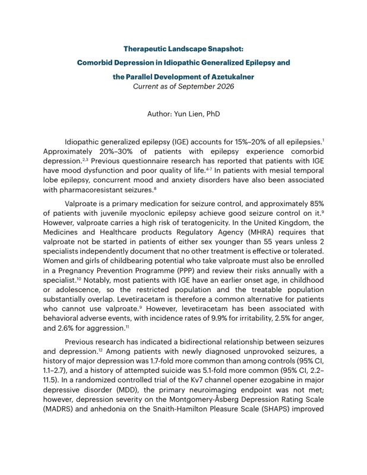
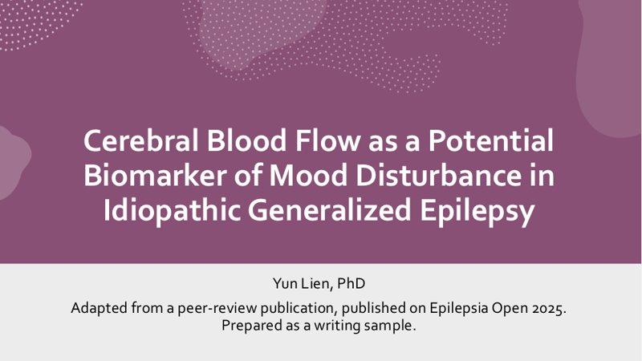
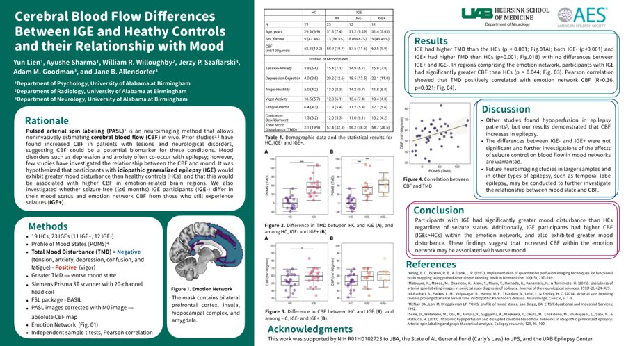

Yun Lien, PhD
Neuroscientist & science communicator · Epilepsy and neurology
About
I'm a neuroscientist with 9 years of research across two countries and two very different questions. My doctoral work at the University of Alabama at Birmingham focused on idiopathic generalized epilepsy. I worked within a 5-year NIH R01 randomized controlled trial (NCT04959019) and first-authored two Epilepsia Open papers drawn from its cohort, on cerebral blood flow, brain metabolites, mood, and cognition.
Before that, at National Yang Ming University in Taiwan, I designed brain-stimulation (TMS/rTMS) experiments and studied how the cerebellum supports motor learning.
Most people who analyze brain data never operate the scanner, and most who operate the scanner don't write the paper. I've done both. What I care about most is the last step: turning complex clinical and imaging data into clear, accurate writing for physicians, researchers, and patients.
Expertise
Epilepsy & neurology
Idiopathic generalized epilepsy, with a focus on cerebral blood flow, neurometabolites, mood, and cognition.
Clinical neuroimaging
MRI, fMRI, MR spectroscopy, and ASL, from scanner operation through analysis. Also EEG data analysis and TMS/rTMS.
Scientific writing
Manuscripts from first draft through journal submission and reviewer response, plus congress abstracts and posters. AMA and APA style.
Data & visualization
R, Python, and MATLAB for analysis; BioRender and GraphPad for figures. Fluent in PowerPoint and Keynote.
Publications
-
Neurometabolite abnormalities and associations with epilepsy duration and cognition in patients with idiopathic generalized epilepsies
Presenting author at the American Epilepsy Society (AES) and the Society for Neuroscience (SfN); co-author on abstracts presented at the American Academy of Neurology (AAN). Full list on ORCID and ResearchGate.
Writing samples
A landscape analysis, a slide deck, and a congress poster, each written for a different audience.

Comorbid depression in idiopathic generalized epilepsy and the parallel development of azetukalner
Reviews the evidence on epilepsy–depression comorbidity, compares the separate seizure and mood trial programs for azetukalner, and sets out what that means for real-world data and trial readouts.
Read PDF →
Cerebral blood flow as a potential biomarker of mood disturbance in idiopathic generalized epilepsy
Adapts my Epilepsia Open paper for a clinical audience, including a slide on what the data can and cannot support.
View slides →
Cerebral blood flow differences and mood in idiopathic generalized epilepsy
First-author poster I presented and laid out myself. It reports the early findings that later became my Epilepsia Open paper.
View poster →Education
Contact
The best way to reach me is on LinkedIn. I'm always glad to hear from people working in epilepsy, neurology, or science communication.
Message me on LinkedIn